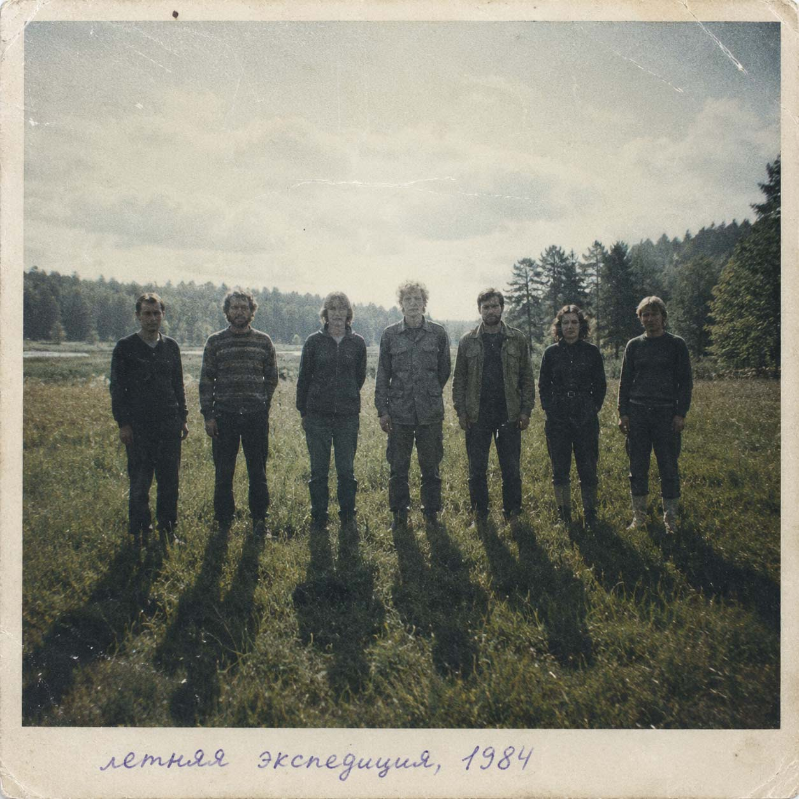
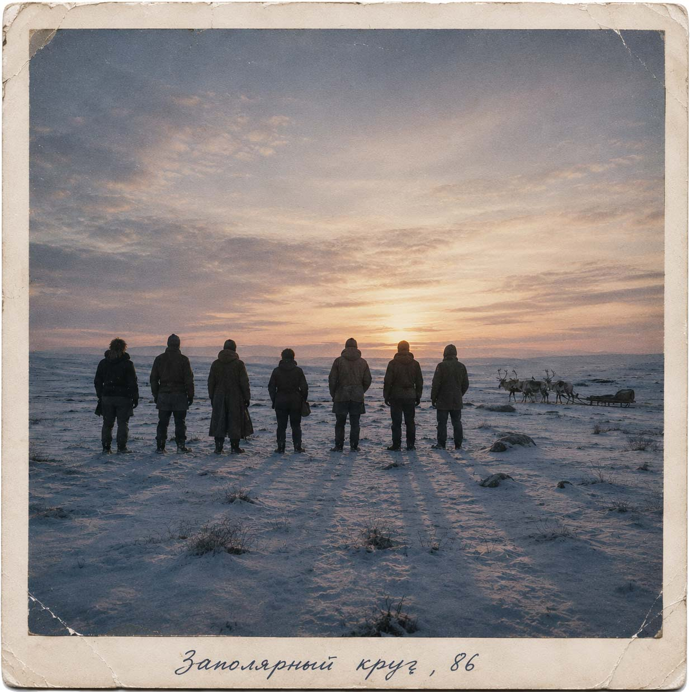
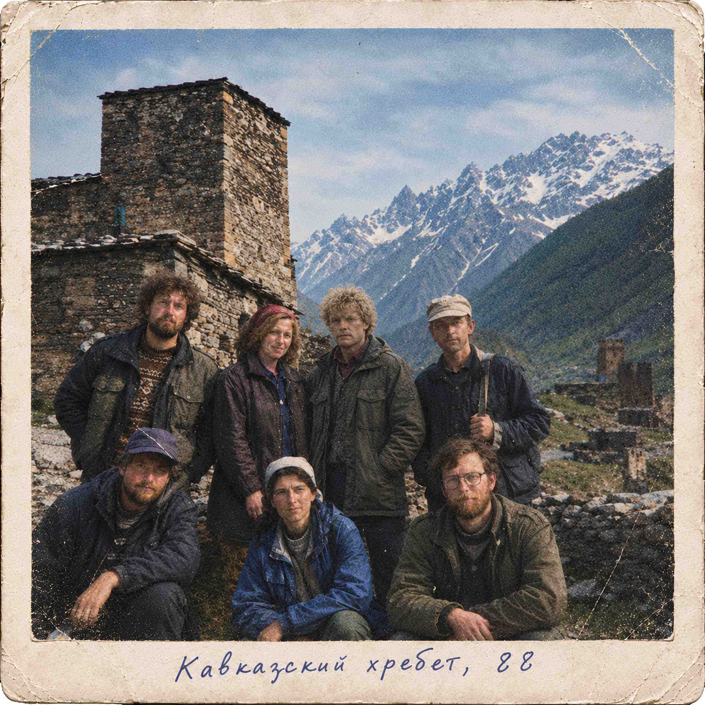

Ritual-84 — archival recordings by a fictional collective reportedly formed in 1984 and associated with ethno-experimental music. The project combines folkloric elements, ritual motifs, choral arrangements, atmospheric soundscapes, field recordings, and early electronic processing. This archive presents three reconstructed album cycles — "Summer Expedition, 84," "Polar Circle, 86," and "Caucasus Ridge, 88" — exploring natural phenomena, seasonal states, landscapes, and presumed ritual practices through the surviving recordings.
P · 03

Summer Expedition, 84
Ambient · Ethnic electronica
AVAILABLE / LISTEN
(Ритуал-84 — Летняя экспедиция, 84) — reconstructed field recordings from a summer expedition that never officially took place. Forest landscapes, ritual fragments, choral voices and early electronics preserve traces of a journey somewhere between folklore, memory and archival fiction.
LISTEN TO RITUAL-84 - SUMMER EXPEDITION
Also available through the RADIUS ARCHIVE distribution network on TikTok, Pandora, KKBOX, iMusica, iHeartRadio, Anghami, JioSaavn, AWA, Tencent Music, NetEase Cloud Music, Facebook Audio Library, Mixcloud, Boomplay, Snap, Peloton, Audiomack, JOOX, FLO, Tuned Global, YouTube Content ID and Facebook Rights Manager.
«The first recordings were made in the abandoned village of Verkhnyaya Zarechka. The locals spoke of a ritual that had not been performed for decades — something about calling the rain. We set up the tape recorder near the old well. The reels turned slowly, capturing the wind, the creaking of the gate, and a distant choir that seemed to come from the forest itself.»
— From the diary of expedition member A. Morozov, July 1984.
INTERNAL MEMO // RADIUS TV ARCHIVE
DATE: 1984-08-02
TO: Director of the Scientific Dept. FROM: Head of the 1st Expedition
«Comrade Director, the material brought from the Summer Expedition cannot be processed by our studio equipment. The tapes contain frequencies that our oscillators cannot replicate. Furthermore, when we attempted to digitize the recording, the studio's magnetic tape erasers spontaneously demagnetized. We request permission to seal the reels until further instructions.»
KUPALA FRAGMENT
«The title survived on a loose sheet inserted into a field notebook. Notes suggest that this recording is only a fragment of a much longer piece, most of which has not survived. Expedition documents contain references to a body of water at night, reflections of light, and collective activities whose purpose remains unclear.»
— From the field notebook, July 1984.
SOLSTICE
«One of the best-preserved pieces in the collection. Accompanying documents repeatedly reference the longest day of the year, though no direct explanation of the event itself has been found. Several notebook pages contain sketches of an open field and observations recorded around midday.»
— From the archive log, 1984.
P · 03

Polar Circle, 86
Ambient · Ethnic electronica
AVAILABLE / LISTEN
(Ритуал-84 — Заполярный Круг, 86) — reconstructed field recordings from a northern expedition that may never have officially taken place. Frozen landscapes, distant voices, ritual fragments and early electronic processing preserve traces of a journey lost somewhere between folklore, memory and archival fiction.
LISTEN TO RITUAL-84 - POLAR CIRCLE
Also available through the RADIUS ARCHIVE distribution network on TikTok, Pandora, KKBOX, iMusica, iHeartRadio, Anghami, JioSaavn, AWA, Tencent Music, NetEase Cloud Music, Facebook Audio Library, Mixcloud, Boomplay, Snap, Peloton, Audiomack, JOOX, FLO, Tuned Global, YouTube Content ID and Facebook Rights Manager.
TRACKLIST9 TRACKS
01Мороз
02Наст
03Следы
04Дыхание
05Полынья
06Торосы
07Сияние
08Улов
09Тишина
1986 · Archival Field Recordings9 Tracks
> FOUND IN ARCHIVE: Arctic expedition photographs, 1986.
«The North does not accept outsiders. We spent three weeks in the tundra, waiting for the weather to clear. The recordings from the polar station were unlike anything we had heard before. The wind, the ice, the cracking of the frozen ground — it all sounded like a single, continuous ritual. The local guide told us that the landscape itself was the performer.»
— From the report of the expedition leader, September 1986.
URGENT
RADIOGRAM TO BASE
«BASE, THIS IS STATION "SIRIUS-7". WE HAVE COMPLETED THE RECORDING OF THE GLACIER. THE ACOUSTIC SIGNAL WE DETECTED IS REPEATING IN LOOPS OF 14 MINUTES. WE ALSO FOUND OLD SLEIGH TRACKS LEADING DIRECTLY INTO THE ICE WALL. THEY ARE FRESH. WE ARE STOPPING THE EXPEDITION AND RETURNING TO BASE. OVER.»
TRACES
«The title appears on a separate archival catalog sheet. Accompanying notes describe a series of unidentified tracks discovered during travel between temporary camps. No further explanation was found, although the subject reappears repeatedly throughout documents from the same period.»
— From the expedition catalog, 1986.
AURORA
«Several surviving materials reference an unusual luminous phenomenon observed during a stay beyond the Arctic Circle. The title “Aurora” appears on a separate archive catalog card, though no detailed description of the event has been preserved. Documents note only the duration of the observation and favorable weather conditions.»
— From the field journal, 1986.
P · 03

Caucasus Ridge, 88
Ambient · Ethnic electronica
SOON
(Ритуал-84 — Кавказский хребет, 88) — reconstructed field recordings from a Caucasus expedition that may never have officially taken place. Mountain settlements, polyphonic male voices, traditional instruments and early electronic processing preserve traces of a journey lost somewhere between folklore, memory and archival fiction.
SOON
Streaming links will be added closer to release.
TRACKLIST9 TRACKS
01Предгорья
02Камни
03Ущелье
04საძოვრები
05Эхо гор
06მთაო, მიპასუხე
07Высота
08მთის საღამო
09Возвращение
1988 · Archival Field Recordings9 Tracks
> FOUND IN ARCHIVE: Caucasus expedition photographs, 1988.
«The Caucasus met us with rain and fog. We worked in mountain villages, recording male polyphonic singing, shepherd songs, and the sound of wind in the gorges. The locals were suspicious at first, but then they began to bring us their instruments — old panduri, chonguri, zurna, and drums.»
— From the field journal, August 1988.
TRANSCRIPT OF AUDIO REEL #84-C
«[Static] ...the mountain answers only when you sing the old songs. [Crackling] ...we recorded a voice in the gorge, but the tape shows no signal peaks. It is as if the voice exists only in the memory of the stone. We are leaving the equipment there. Do not send anyone to look for us.»
GORGE
«A recording that places particular emphasis on the acoustics of its surroundings. The male voices are sustained and distant, individual instruments appear only in brief passages, while the long echo becomes part of the composition itself.»
— From the expedition notes, August 1988.
PASTURES (საძოვრები)
«In this recording, the electronic elements remain particularly understated, almost blending into the acoustic instruments. The vocal line stays simple, while the male polyphony gradually enters without sharp transitions. The title refers to mountain pastures and is one of the few Georgian designations preserved among the cycle’s materials.»